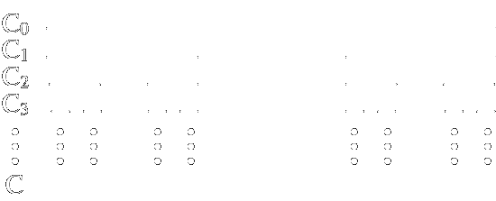
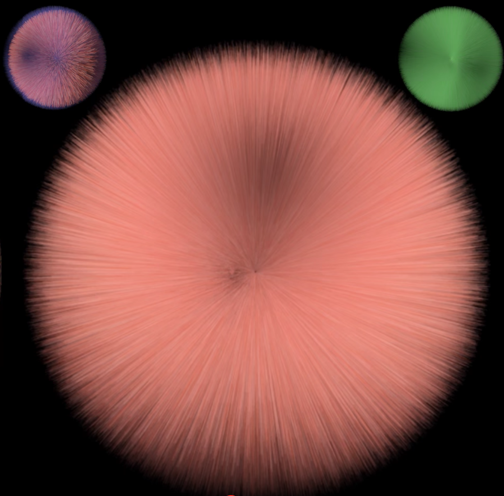
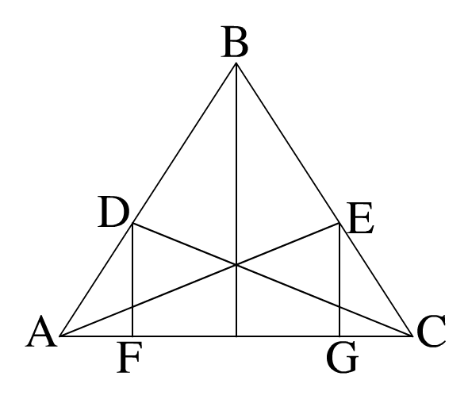
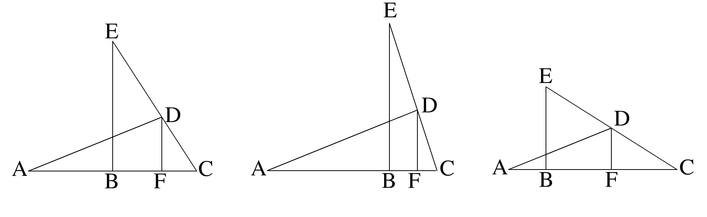

Check out the latest posts by Jonathan Baca or Gabriel Hesch, and find out what's up with Breaking Math!
Download the episode for iTunes, Soundcloud, or Google Play.
We will start off this week’s episode with a nice flowery intro (the kind that Jonathan is now famous for). Comparing an episode to a meal? Too much cheese? That is for you to decide. And be wrong about. But without further ado, bon appetit.
Proofs are sometimes seen as an exercise in tedium, other times as a pure form of beauty, and often as both. But from time immemorial, people have been using mathematics to demonstrate new theorems, and advance the state of the art of mathematics. However, it is only relatively recently, within the last 3,000 years, that the art of mathematical proof has been considered essential to the study of mathematics. Mathematicians constantly fight over what constitutes a proof, and even what makes a proof valid, partially because proof requires delicate insight. So what is the art of mathematical proof? How has it changed? And who can do it?
Then, for a first course, we will discuss what proofs are and get into a quite meaty section of the podcast.
Amy brings up the uncountability of the Cantor set. In brief, the Cantor set is what happens when you take a line from 0 to 1, cut out the middle third, cut out the middle third of the lines that remain, and so on. It is illustrated here:
The proof only necessitates some basic outside the box thinking, and a wonderful walkthrough of the proof can be found here
The proof in the link also requires knowing base-3. Here's what base-3 is: instead of having ten digits (0, 1, 2, 3, 4, 5, 6, 7, 8, and 9), you have three (0, 1, and 2). So when you're counting, you go 0, 1, 2, 10, 11, 12, 20, 21, 22, 100, 101, and so on. Decimals work the same way. In base-3 (or ternary), 0.12 is not 1 10th plus 2 100ths, but 1 3rd plus 2 9ths (9 being 3 times 3). This continues indefinitely. It also contains a variant of the diagonalization argument, which is discussed on the podcast.
The proof that the difference of two odd numbers' squares is divisible by four follows simply: first write down your two odd numbers $n$ and $m$. Next, write them as $n=2a+1$ and $m=2b+1$. You can do this with all odd numbers, and this is in fact one definition of "odd numberiness". Next, write out:
Take \(n^2 - m^2\)
Substituting, we get \((2a+1)^2 - (2b+1)^2\)
Expanding, we get $4a^2 + 4a + 1 - 4b^2 + 4b + 1$
Factoring and cancelling, we get $4(a^2 + a - b^2 - b)$
Let $k = a^2 + a - b^2 - b$
And summarizing, we see that $n^2 - m^2 = 4k$
And since $k$ is an integer, what we needed to have proven has been proven. Try it out! $3^2-1^2=9-1=8=4\cdot 2$, $141^2 - 89^2 = 19881 - 7921 = 11960 = 4 \cdot 2990$, etc.
Proof that \(2+2=4\)! You can skip over this if analysis isn't your jam. First what you do is you make a few assumptions (known together as the axiomatic foundations of Peano arithmetic):
The next step is to show that $n+0=n$. We do this much in the same fashion:
(Sure, it didn't require all that showing that $n+m=m+n$, but that was fun, right?)
An axiom is an assumption, in some sense, that is made without giving heed to whether or not it should be assumed or not. It is a basic assumption that cannot be assumed further, in a sense. It’s sort of like the atoms of math.
Some interesting facts about axioms:
There, of course, are several types of proofs:
We already covered Euclid, but we did not really cover the necessity that facilitated the invention of mathematical proofs. Proofs are useful because they give us, in some sense, an infinite amount of information (or at least very perfect information) from things that we already know to be true. One source of inspiration that mathematicians have is in looking for patterns. For example, if there is a case that can be labelled “0”, and a case that can be labelled “1”, the next logical step for many mathematicians to take is to try to dream up a scenario where “∞” shows up. Guest Amy points out that it is frustrating that proofs are not generally taught in such a way that introduce one to the actual underpinnings of mathematics; many assume, throughout their whole schooling, that mathematics is something left to “loftier” minds, whatever they may be. Proofs are foundational to our entire way of life. It was in doing proofs about stars, for example, that physics was born (through Kepler and Newton).
Or controveries in proof. Before we cover real controversies, we’re going to cover pseudo-controversies. That is to say, we’re going to cover something that many people have a hard time believing, but are consistent with all the rules of mathematical reasoning. One proof is that $0.999\ldots=1$. No not is almost one; is one. The proof is simple, and takes no longer than a sentence or two: $\frac23=0.666\ldots$, and $\frac13=0.333\ldots$. $3+6=9$, so $\frac13+\frac23=1=0.999\ldots$. That’s it! Read that over a few times to convince yourself of it.
Another harder-to-believe problem that is fraught with unnecessary controversy is the Monte Hall Problem. The problem is as follows: you have three doors before you. You know that behind two of the doors is a goat, and behind the other is a car, but you don’t know which one is which. The host lets you choose a door, and then opens one door, revealing a goat. He then asks you if you want to switch doors. Should you? The answer is “yes”, but there are plenty of resources online for learning why. Try it out on your own! And try to prove it without resorting to exhaustive search (that is to say, without trying all three, nine, twenty-seven, etc. combinations). And don't fret if you don't get it right the first few times; there were PhD statisticians who argued against the correct answer for weeks!
We will touch on Paul Erdős before we continue. He had a problem with one of the most famous proofs of the Monte Hall Problem because it wasn't elegant enough. Paul Erdős is one of the most prolific mathematicians (edging out even Euler), who lived an itinerant lifestyle; he went from couch to couch, only stopping for as long as it took for him to collaborate on a paper. He was highly influential int the mathematical community, and his opinion is (in general) well respected.
Sometimes, however, mathematics has shown itself to be overly complicated or even contradictory. Take, for example, the parallel postulate. Euclid’s five postulates, mentioned earlier, are here in full:
To put it briefly, imagine the globe as it exists now. If you were to draw a triangle on the ground, you would have basically a triangle with 180 degrees of inner angles. Expand it, however, and the lines would start to curve around the earth (this is using the definition of the line as being the shortest distance between two points, which on the earth is known as the great sphere). Expand it to the point where you have a triangle that is "stretched" along the equator (or square, or n-gon), and you have anywhere from 540 degrees to a triangle, or 900 degrees for a pentagon, to an arbitrarily high number of degrees for an n-gon (180n, to be precise). With a saddle shape, you'd get the opposite phenomena. Please note that euclidean geometry still works in three dimensions, but not in intrinsically curved two dimensional surfaces embedded in more than two dimensions (or n dimensions really). A surface is intrinsically curved if a flat sheet of paper cannot be "crumpled" into that shape. For example, the globe: you cannot really fold a globe (without crossover, etc) out of a single sheet of paper.
Another controversial part of mathematics is set theory. A set is like a bucket full of things where those things can also be other sets (buckets). There's an axiom called the "axiom of choice" which basically states that, given a number of sets, you can choose an element out of every set and make a new set with it. Taking the axiom of choice, however obvious as it may seem to mathematicians, is not without due diligence. Taking the axiom of choice, for example, can lead to the Banach-Tarski paradox. An excellent explantion can be found here, but its premise will be given here breifly.
Imagine you have a cube. You then cut it up in to an infinite number of little pieces. Then, by just rearranging the pieces, you somehow wind up with twice as many spheres as you started out with (nuts, right? check out the video). Another paradox that comes out of using elementary set theory is in definining the "set of all sets that do not contain themselves" and asking the question "does such a set contain itself?" If it does, then it doesn't (because it only contains sets which do not contain themselves), and if it doesn't it does (because it only contains sets which do not contain themselves). You can avoid these paradoxes with certain types of set theory such as ZFC, but these were not invented (or discovered) until much later.
What all these have in common are paradigm shifts. For example, set theory itself was paradigm-shifting in just causing mathematicians to think outside of their rulers and circles. Imaginary numbers were paradigm shifting for a mind that could only think of the real numbers. Etc., etc., etc.
Here is a challenge. Suppose you have a triangle set up like this:
Suppose you know that $BAC=BCA$ (that is to say, that the triangle is isoceles). Can you show that this is a direct and necessary result of $CD=AE$ if $EAC=DCA=\frac12BAC$? It took us a while, but we're going to give you a little hint. Suppose you keep the angle the same, but increase the cross-section, and keep the sides of the isoceles the same. Look what happens to $B$ (which is at the midpoint of $A$ and $C$ on the first diagram)
Click here for older posts.